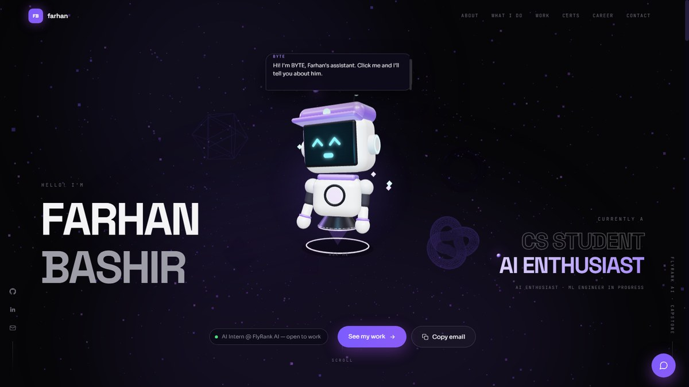
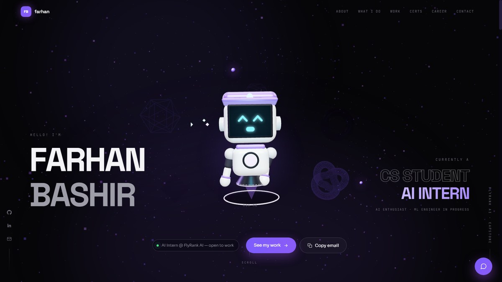
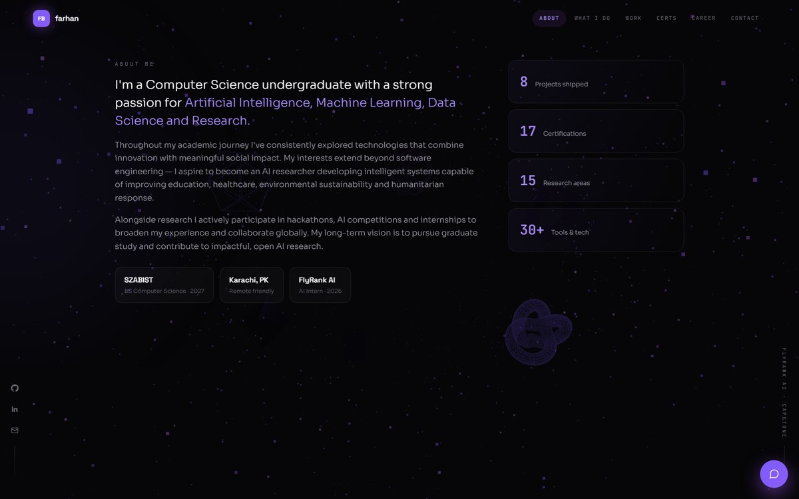
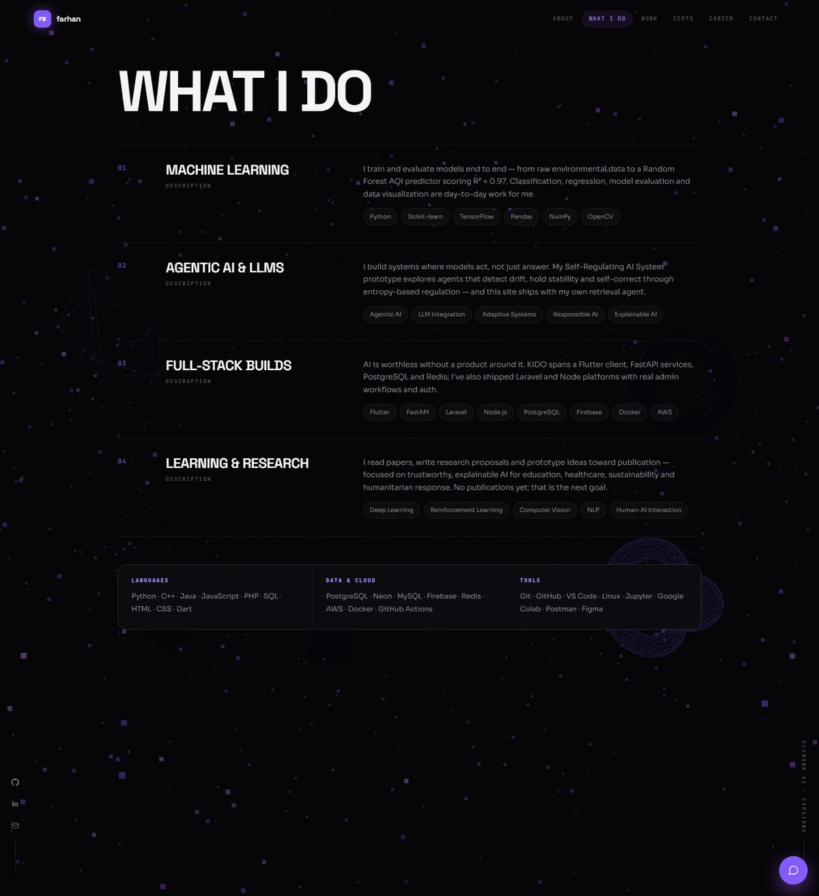
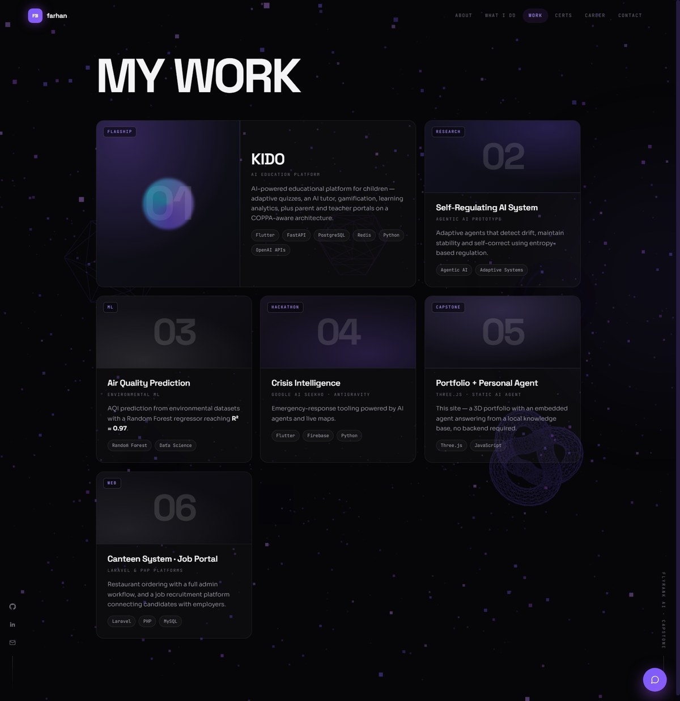
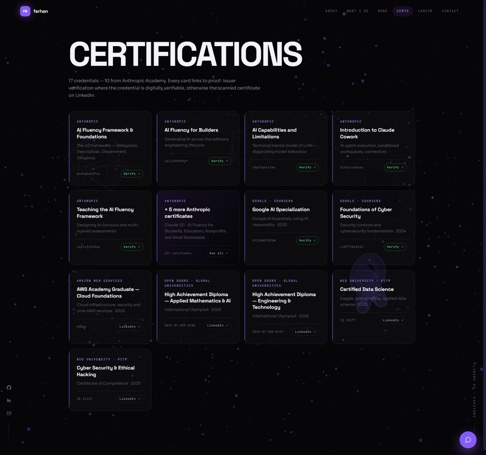
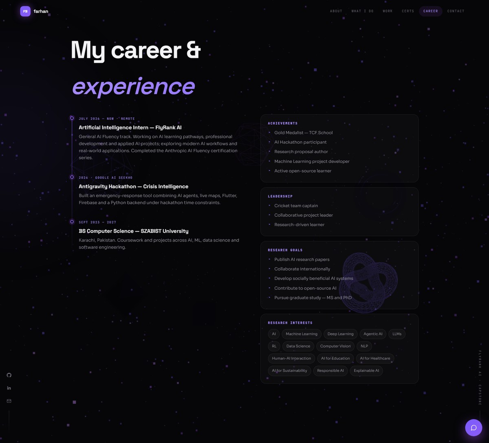
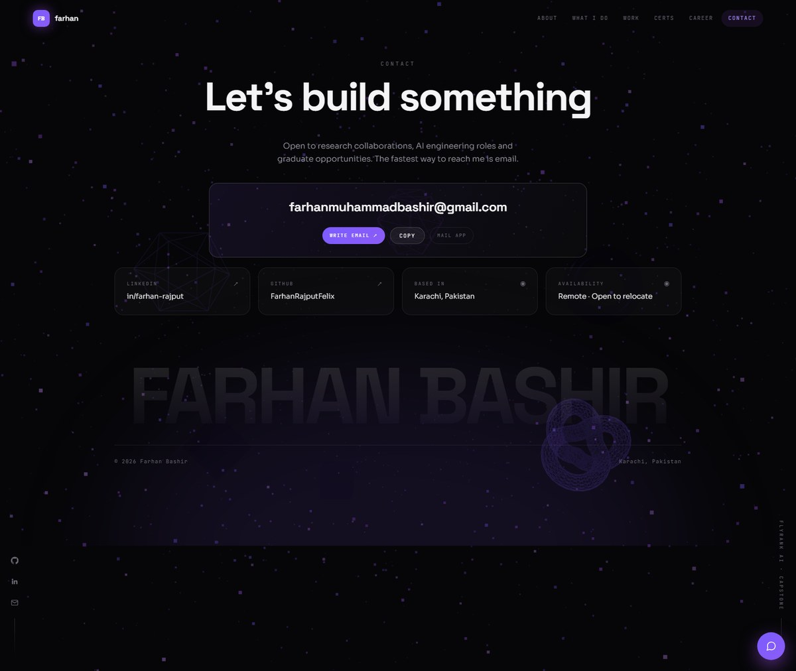
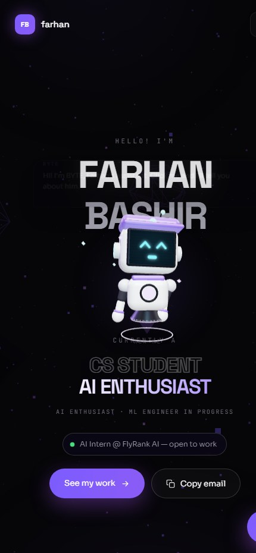
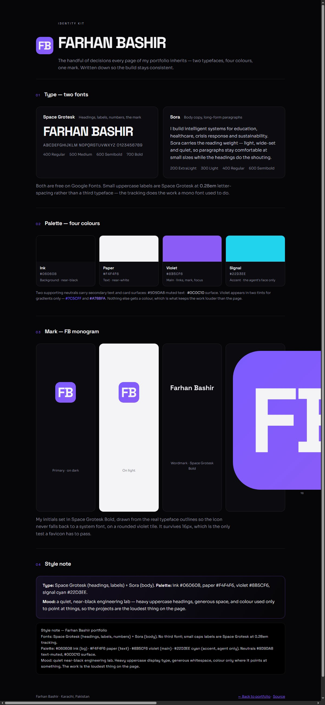

What my portfolio shows,
and what I threw away
My portfolio carries exactly one photograph — a real one, of me — and zero AI-generated pictures. Everything else is either a real screen capture of working software or geometry generated by code at runtime. That was a decision, not an accident, and this page shows the reasoning, including the images I made and killed.
What the portfolio actually needs
Mapped section by section against the live site. The point of the exercise is that most rows resolve to “real capture” or “nothing needed”, and only two resolve to “generate something”.
| Section | Image need | Decision | Why |
|---|---|---|---|
| Hero | Background texture + a character | Code-generated | A Three.js particle field and a procedural robot, both built from primitives in the browser. Reacts to the cursor, weighs 0 KB as an image, and can't look like the same AI abstract gradient every other portfolio uses. |
| About | Portrait of me | Real photograph | A real photo of me, cropped square around the face and masked to a circle at 96px, beside my name. Never a generated likeness. It sits in About rather than the hero deliberately — big enough to prove a person is behind the work, small enough that the work still leads. |
| What I Do | Icons per capability | Nothing needed | Four dashed rows with numbers and typography carry it. Icons would have been decoration competing with the type. |
| Work — KIDO, AQI, Crisis Intelligence | Screenshot per project | Real captures pending | These need genuine captures from the apps and notebooks. Until I have them the cards use plain gradient covers with index numbers. An AI-generated “app mockup” here would be inventing evidence. |
| Certifications | Certificate images | Real, off-site | Rather than embed 17 images, each card links to issuer verification (Anthropic, Coursera) or the scanned certificate on LinkedIn. A link that proves it beats a picture of it. |
| Contact — location card | A map | Traced vector | Pakistan traced from Natural Earth (public domain) into a 722-character SVG path with Karachi marked. No map API, no key, no third-party request, and it inherits the site palette — none of which a screenshot of Google Maps could do. |
| Brand | Logo / favicon | Vector, real typeface | FB monogram drawn from actual Space Grotesk outlines, so the icon can never fall back to a system font. |
| Documentation / posts | Screenshots of the site | Real captures | The ten captures below — used for the capstone document, LinkedIn post and this audit. |
The keepers — ten real captures
Every image below is a real screenshot of the live site, taken at a fixed viewport with load animations disabled so nothing is caught mid-fade. Cropped to one section each, so a reviewer never has to hunt for the subject.










Killed — and the reasoning
I could have generated slick “app screenshots” for KIDO and the Crisis Intelligence hackathon build in seconds, and the Work section would look finished today.
Why it's out: a generated mockup of software I built is not evidence of the software — it's a drawing of a claim. A reviewer who assumed those were real captures would have been misled by me. I would rather ship plain numbered gradient covers that are obviously graphic devices, and add real captures when I record them. The empty spot is honest; a pretty fake isn't.
My first instinct for the hero was a generated abstract texture — nebula, mesh gradient, that whole look. I dropped it before it reached the page.
Why it's out: two reasons. It's the single most recognisable "made with AI in 2026" visual, so it would have made an AI-fluency portfolio look generic. And it's a dead image — the particle field I wrote instead reacts to the cursor, ties into the same violet palette as everything else, and costs nothing to download.
An illustrated or AI-rendered "me" for the About section.
Why it's out: where the subject is a person, the only honest image is a photograph. A synthetic face of a real person on a professional profile is a small lie in the most sensitive possible place, and scholarship and hiring reviewers are exactly the audience that would care. The portrait in About is a real photo of me; the only other character on the site is an obviously non-human mascot, never a synthetic version of me.
I did put a real photograph of myself in the hero at one point, and even cut the studio background out of it programmatically so the subject floated on the dark theme.
What I learned: it was the right photo doing the wrong job. Full-height in the hero, a light studio portrait fought a near-black page and pulled attention to my face on a page whose argument is my work. So I cut it — then brought the same photograph back at 96px in About, cropped to the face and masked to a circle. Same asset, correct size, correct place. Killing a darling didn't mean deleting it; it meant demoting it.
Where I chose a real capture over AI
| Everything showing my work | Ten screenshots of the running site, at fixed viewports with animations disabled. AI cannot produce a capture of software that exists — only a picture that resembles one. |
| Certificates | Issuer verification links and LinkedIn scans instead of images. I tested every link before shipping; one Coursera URL was wrong and got fixed. |
| Anything depicting me | Real photograph only, or no image at all. Never a generated likeness. |
| The logo | Built from the real Space Grotesk font outlines, not an AI-drawn mark, so it matches the site's headings exactly at any size. |